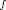
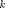
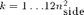
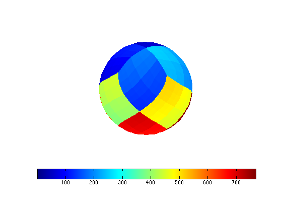

hp3d
Plot a HEALPix dataset on a 3D sphere
Contents
Syntax
h = hp3d(vPix,'Param1',Value1,'Param2',Value2,...);
Input Arguments
vPix vector of values at HEALPix pixels
Param Value
'nest' vPix in nest index order (true | {false})Return Arguments
h (optional) array of patch handles for the sphere
Description
Let  be a (real-valued) function on the sphere and vPix be a vector of function values at pixel , . hp3d(vPix,'nest',nest) plots the function on a sphere. The parameter nest indicates whether the values vPix are given in nested index order (true) or ring index order (false and default).
Example
plot nested pixel numbers on a sphere
hp3d(1:768,'nest',true);
 Requires
corners, nPix2nSide
Copyright 2010-2011 Lee Samuel Finn. Terms of Use.